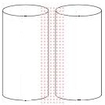

Proximity means nearness in space or time, so as the name suggests, proximity effect in transmission lines indicates the effect in one conductor for other neighbouring conductors. When the alternating current is flowing through a conductor, alternating magnetic flux is generated surrounding the conductor. This magnetic flux associates with the neighbouring wires and generates a circulating current (it can be termed as ‘eddy current’ also). This circulating current increases the resistance of the conductor and push away the flowing current through the conductor, which causes the crowding effect.

When the gaps between two wires are greater the proximity effect is less and it rises when the gap reduces. The flux due to central conductor links with right side conductor. In a two wire system more lines of flux link elements farther apart than the elements nearest to each other as shown above. Therefore, the inductance of the elements farther apart is more as compared to the elements near to each other and hence the current density is less in the elements farther apart than the the current density in the element near to each other. As a result the effective resistance of the conductor is increased due to non uniform distribution of current. This phenomenon is actually referred as proximity effect. This effect is pronounced in the case of cables where the distance between the conductor is small whereas proximity effect in transmission lines in the case of overhead system, with usual spacing is negligibly small.
 by
by